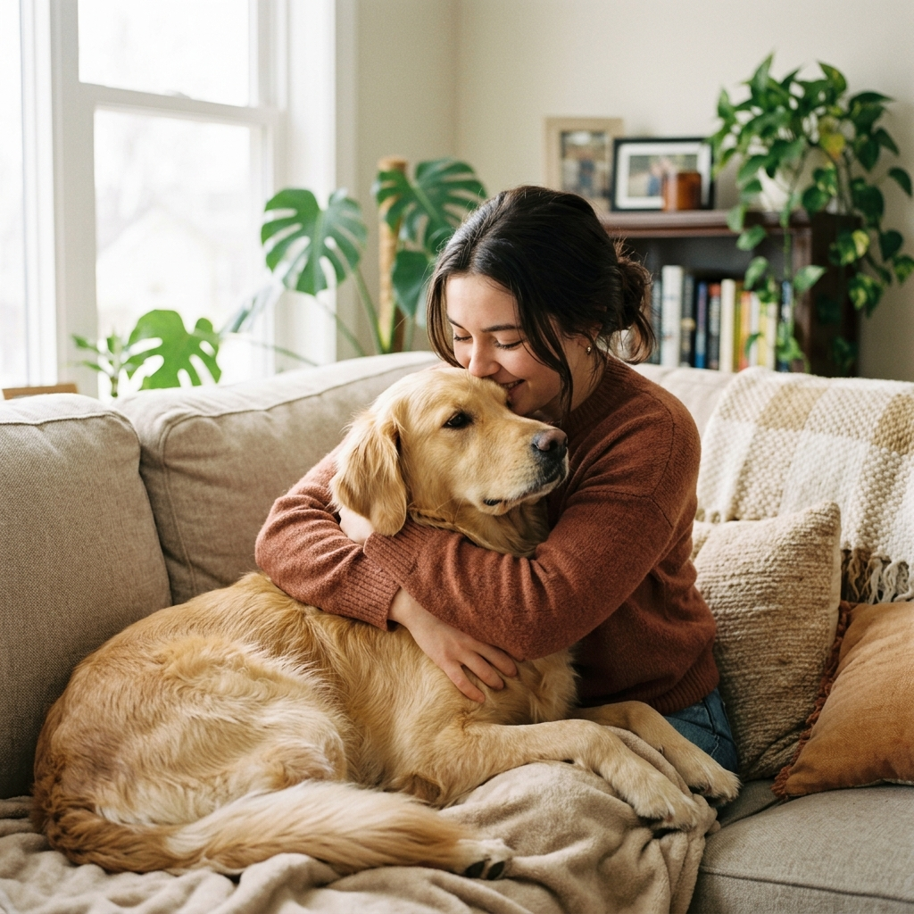
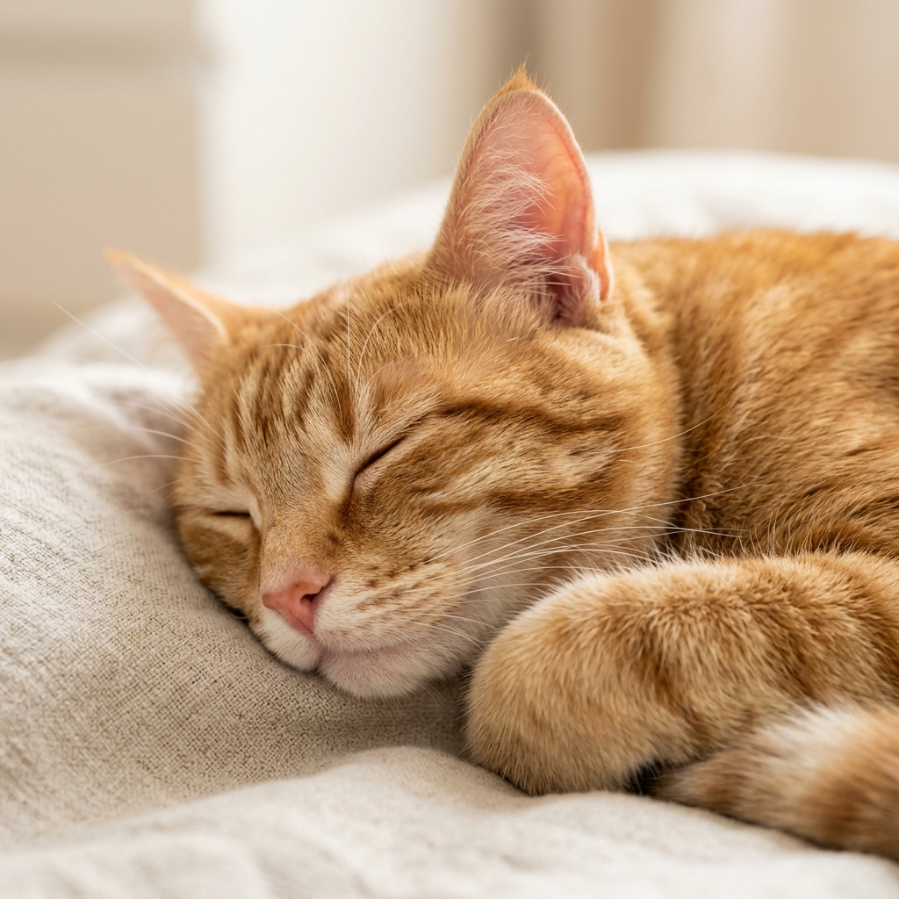
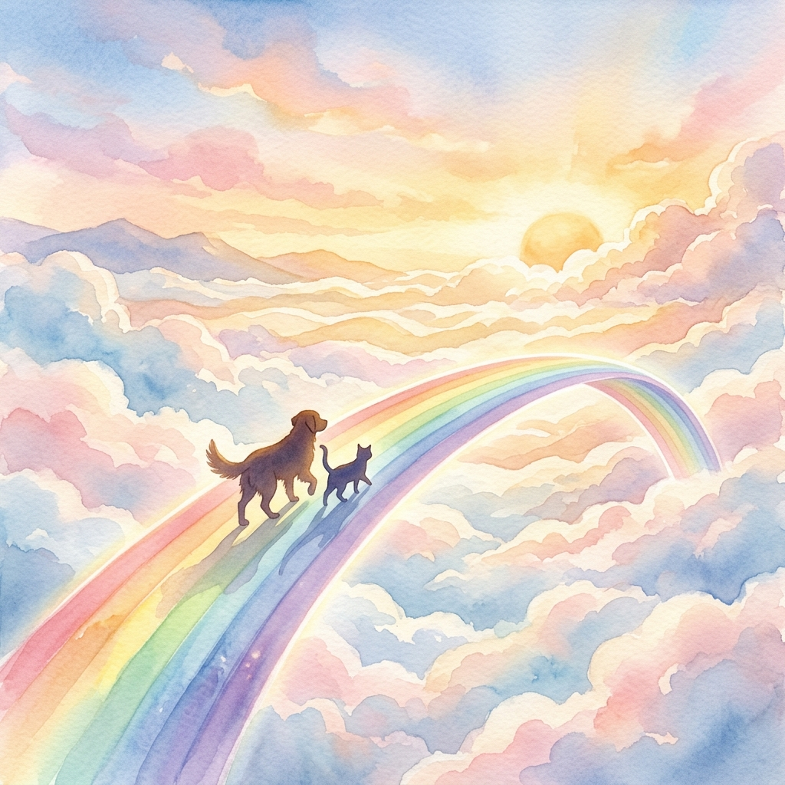
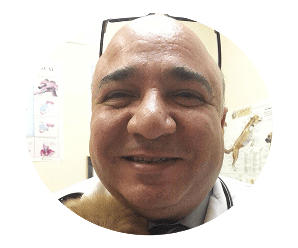

Pet Home Euthanasia Services
In Home Pet Euthanasia and Pet Cremation Services in Orange County, CA
Call Us Now (760) 912-0848Comfortable & Familiar
Your pet stays in the home they love, surrounded by their favorite spots and smells.
Reduced Stress
No stressful car rides or unfamiliar clinic environments. A peaceful, calm experience.
Family Together
Everyone can be present to say goodbye. No waiting rooms, no time limits.
Saying goodbye to a beloved pet
If you've ever had to say goodbye to a beloved pet, you know how difficult that can be. Our pets are our companions and friends over the years, offering us all their love. It can be tough to know how to best honor them in their final days, weeks and months of life. At Pet Home Euthanasia Services, we're here to help make your pet's passing a peaceful one.

Dr. Soliman & his Team help you make the best decision
It's especially hard to know when the time has finally come to say goodbye to a pet. In some situations, you may find that your pet's health has taken an obvious turn for the worse with painful symptoms. For many, though, it's not quite as clear. You'll often find that older dogs and cats slowly decline in health. Dr. Soliman is here to support you with compassionate care, quality of life assessments and experienced advice based on decades working with pets at the end of their lives. His goal is to help you make the best decision for your family.
Dr. Soliman is here to support you
Many owners believe that their pets are probably doing alright as long as they're still eating the food you give them and drinking water. The truth of the situation, however, is that animals can continue to eat and drink even when in a great deal of pain. Dr. Soliman can discuss the quality of life of your pet on a phone call. He'll ask you how many good days your pet has compared to the bad ones and go over other signs of declining health in animals. This can include changes to their behavior, isolation and a lack of interest in what once were their favorite toys and treats.
We will be there
We know that this is an overwhelming experience for your family. We're here for both you and your pet throughout this time. Dr. Soliman is available to answer questions before, during and after the process to alleviate any fears you may have. By choosing in-home euthanasia, you'll know that your pet had a peaceful passing surrounded by everything and everyone they love most in the world.

Pet Cremation and Pet Aftercare Services
After a pet has been euthanized, it's common for the owner to be unsure of what to do next. We offer pet cremation and aftercare services to help you honor their memory in a way that suits your family best.
A private cremation means that your pet's remains will be returned to your family in a personalized cedar box. Choosing a communal cremation means that you will not receive your pet's ashes. You may also request a fur clipping and a clay paw print regardless of which option you choose.
Cost
Euthanasia Only
Start at
The Euthanasia-Only package includes travel for the veterinarian, an in-home exam, pet sedation and euthanasia. You may choose to keep your pet's body afterward for a home burial or transport them to a pet cremation facility yourself.
Call to ScheduleEuthanasia + Communal Cremation
Start at
The Euthanasia + Communal Cremation package includes travel for the veterinarian, an in-home exam, pet sedation, euthanasia and the gentle transportation of your pet for a group cremation. Please note that your pet's ashes will not be returned to you, though you may request a fur clipping or a clay paw print.
Call to ScheduleEuthanasia + Private Cremation
Start at
The Euthanasia + Private Cremation package includes travel for the veterinarian, an in-home exam, pet sedation, euthanasia and the gentle transportation of your pet for a private cremation. Your pet's ashes will be returned to you through shipping delivery. If you prefer, hand delivery can be arranged for an additional fee. You may also request a fur clipping or a clay paw print as well.
Call to ScheduleThis cost applies for 20 miles radius from our location in Rancho Cucamonga.
Prices may vary depending upon the distance and weight of the pet.
For more information call or text (760) 912-0848
Methods of Payment
Cash or Checks
Preferred methods of payment are cash or checks.
We also accept Zelle, Apple Cash, and PayPal.
Credit Cards
We accept Visa and Mastercard.
* Many Pet Insurance companies cover euthanasia services. Please have any paperwork ready for the veterinarian to complete so that you may submit it for reimbursement.
Frequently Asked Questions
Common questions about in-home pet euthanasia in Orange County
Still have questions? We're here to help.
Call (760) 912-0848
About Dr. Hany Soliman
Dr. Soliman received his veterinary degree from Cairo University Veterinary School in 1994 and practiced abroad for over a decade before moving to the US in 2005. He received additional certifications for his veterinary license from Oklahoma State University and moved to the great state of California to practice as an associate veterinarian at Banfield and private clinics in the following years.
In that time, he found that many owners were seeking out in-home euthanasia for their pets. To better offer those loving final moments together, Dr. Soliman decided to open up a mobile practice providing in-home pet euthanasia. His goal is to provide pets and owners the compassion and care they deserve at a difficult time.
What Families Say About Us
We are honored to have helped families across Orange County during difficult times
Dr. Soliman was incredibly compassionate during the most difficult day of our lives. He made our sweet Bella's passing so peaceful. She was relaxed and at home with us, just as she would have wanted. We are forever grateful.
We couldn't have asked for a more gentle experience for our 15-year-old Max. Dr. Soliman explained everything clearly and gave us all the time we needed. He truly cares about the families he helps. Highly recommended.
Having our cat Luna pass at home surrounded by our family meant the world to us. Dr. Soliman was patient, kind, and gave Luna the most peaceful goodbye. The private cremation and paw print were beautiful keepsakes.
Rated 5.0 stars based on 47+ reviews from Orange County families
Orange County and Surrounding Areas
Call me to discuss travel distance
Pet Euthanasia in Orange County, CA
Pet Home Euthanasia Service offers in home pet euthanasia as well as pet cremation and aftercare for owners in Orange County and surrounding areas. If you've ever had to say goodbye to a beloved pet, you know how difficult that can be.
For more information call or text.
Opening Hours
We are open 7 days a week
From 8:00am — to — 8:00pm
By appointment only.
Thank you for your patience.